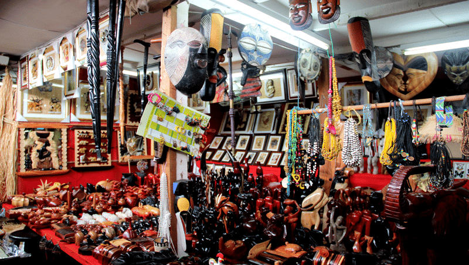

Un Savoir-Faire Unique qui Valorise l’Identité Nigérienne

Explorez une large gamme de produits locaux, soigneusement sélectionnés pour répondre à tous vos besoins quotidiens. NovaNiger simplifie vos achats en vous offrant qualité, variété et authenticité dans un seul espace. Parcourez nos collections et laissez-vous inspirer par la culture et la tradition. Chaque création raconte une histoire, façonnée avec passion et savoir-faire local.